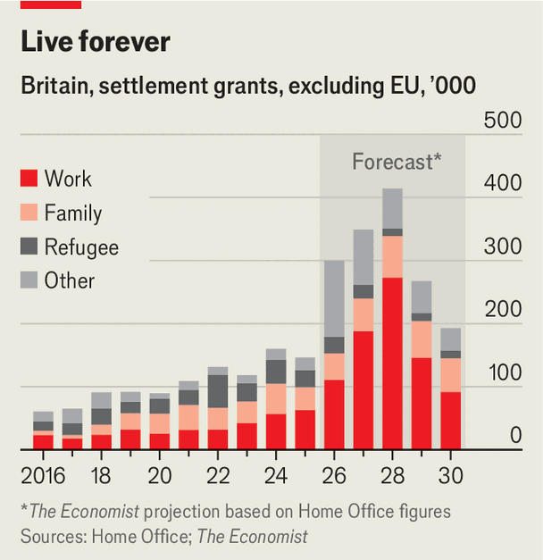

Britain makes the path to permanent residence more arduous
It is unlikely to save the “billions” that the government claims
Nov 5th 2026
Shabana mahmood’s parents arrived in Britain from Kashmir in the 1970s. The father of the home secretary was a civil engineer and her mother ran the family shop. That generation of arrivals from the Commonwealth faced few barriers to permanent residence and citizenship.
Immigrants to Britain today must pass tougher tests. On November 2nd Ms Mahmood announced changes to permanent residence, known as Indefinite Leave to Remain (ILR), that will impact thousands of migrants on similar paths to her parents. Ms Mahmood backtracked on her initial hardline proposals. Yet in trying to use ilR to do three things at once—deter migrants, improve integration and control costs—she risks achieving none at all.
The Labour government has played tough on immigration since winning power in 2024. The tightening of visa rules helped cut net migration from non-EU countries over the past three years from 1m to 350,000. However, under existing rules, nearly 2m migrants who arrived in 2020-24 were soon to be eligible to apply for ILR and the welfare benefits it confers. Ms Mahmood claimed that allowing them to do so would cost the country billions.
So the government has shifted the goal posts. Last November it proposed doubling the time to ILR from five to 10 years, but extending it up to 15 for those in lower-skilled jobs including 400,000 care workers. Four-fifths of the 200,000 people who responded to its consultation, many of them immigrants, disagreed. Andy Burnham convinced Ms Mahmood to water down the policy after becoming prime minister in July. The result is a fudge.

The new rules have raised the bar on English-language fluency. Migrants must have a spotless criminal record (some MPs would fail on this basis). They or their partners must have contributed to the Treasury’s coffers. But the biggest change is the minimum-residency period. The standard five-year ILR pathway will now vary from three years for attractive migrants such as high-earners and entrepreneurs to 30 years for asylum-seekers who crossed the English Channel illegally. About 1.4m people are now expected to be granted settlement between 2026 and 2030 (see chart).
The changes retrospectively penalise about 230,000 skilled workers earning less than £50,000 ($67,000) a year, as well as 100,000 people holding care-worker visas who the government suspects have never worked in the sector. For these groups eligibility for ILR will double to ten years. But exceptions have been made for most holders of health and care-worker visas, for whom the government is paymaster. Some 600,000 workers and their dependants will still be eligible for ILR after five years.
The group most affected by the changes are refugees. Under old rules, those granted asylum protection would be eligible for ILR after five years. Henceforth, asylum status will be reviewed every 30 months, to determine whether a country has become safe. The period to ILR eligibility will be 30 years for people who arrive illegally, as around half of asylum-seekers do, and 20 years for those who arrive on a visa. Bangladeshis, Nigerians and Pakistanis, who often obtain visas, will be treated differently from Afghans, Eritreans and Iranians, who cannot acquire them.
As well as deterring small-boat crossings, Ms Mahmood is trying to improve the integration of refugees. ILR eligibility will be cut by ten years for those who earn at least £12,600 for three years. At present, just one in four working-age refugees earn at least £10,000 five years after gaining asylum. Ben Brindle of the Migration Observatory, a think-tank, points out that evidence from Denmark—a country Ms Mahmood has tried to copy—suggests residency carrots act as incentives for those close to qualifying, but others give up.
The changes are likely to save nothing like the sums the government trailed. Ms Mahmood implied that sticking with the five-year ILR would cost £10bn. Those numbers were misleading as they were predicated on the lifetime fiscal costs of care workers, not a five-year deferment of ILR. A rough calculation suggests that extending ILR to ten years for 350,000 people will save £450m. Refugees, meanwhile, can still claim benefits prior to settlement. Ms Mahmood maintains that her changes will “save billions” but that will depend on whether ILR changes migrants’ behaviour. And that remains to be seen. ■